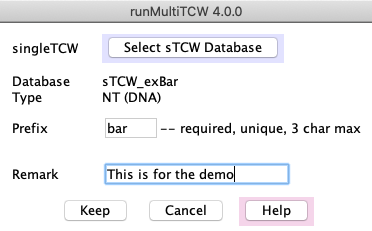
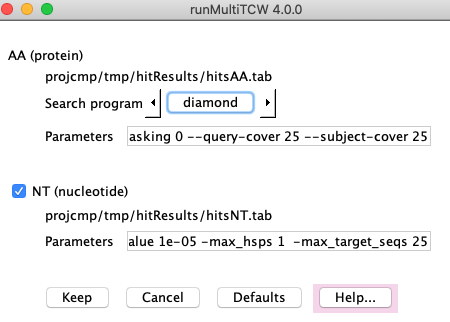
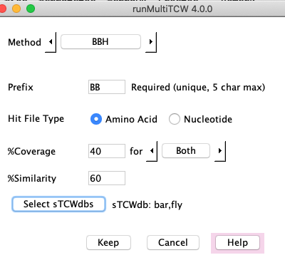
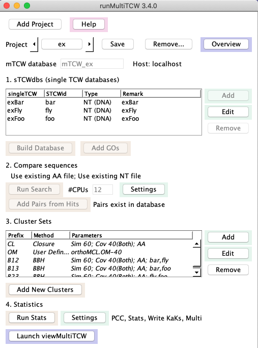
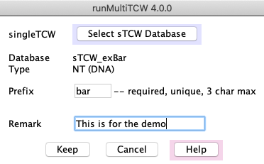
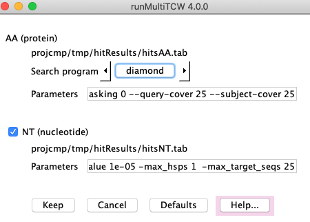
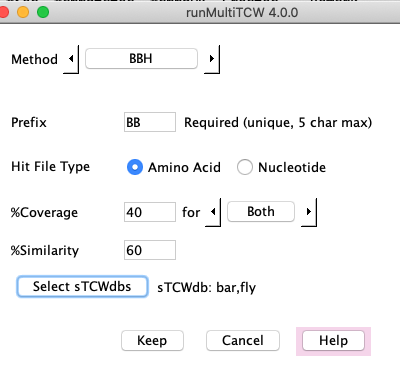

{kind=link}

{kind=link}
{kind=link}


{kind=link}

runMultiTCW
| Main Panel | Additional Panel | Example summary statistics | References |
runMultiTCW takes as input two or more singleTCW (sTCW) databases
and builds a multiTCW (mTCW) database of clustered sequences.
See mTCW UserGuide for details.
Main panel
|
1. sTCWdbs (single TCW databases).
Add/Edit: Define the input sTCW databases (see panel #1), which can be created from nucleotide sequences (NT-sTCW) and/or protein sequences (AA-sTCW). For NT-sTCW, the nucleotide sequences and translated ORFs will be loaded. Build database: Builds a database of all sequences, TPM, DE, annotations and GOs. 2. Compare sequences Run Search: This creates a file of all sequences and performs a heuristic search1 against itself to determine similar sequences. The search program and parameters can be changed (see panel #2). Add Pair from Hits: All pairs from the Hit file are entered into the database. 3. Cluster Sets. Add/Edit: Add a cluster type to be computed (see panel #3), where the methods are:
Add New Cluster: The clusters defined in the table will be computed and added to the database. |
 |
4. Statistics
Add Stats: Add statistics (see panel #4), as follows.
KaKs_calculator4 along with a script to run from the terminal.
KaKs_calculator has been
executed on the KaKs files. It reads the results into the database.
Additional panels | Go to top |
|
1. Add single TCW database
 |
2. Run Search
 |
|
3. Add a cluster method
 |
4. Add statistics. The counts on the bottom are updated after Run Stats is executed.
|
Example summary statistics | Go to top |
Project: ex Cluster: 868 Pairs: 997 Seqs: 707 Hits: 2.1k PCC Stats KaKs Multi
Created: 24-Oct-20 v3.1.0 Last Update: 26-Oct-20 v3.1.0
DATASETS: 3
Type #Seq #annotated #annoDB Created Remark
bar NT 250 244 2 05-Oct-20 exBar
foo NT 250 245 2 05-Oct-20 exFoo
fly NT 207 205 2 18-Oct-20 exFly
CLUSTER SETS: 4
Prefix Method Parameters
BB BBH Sim 60; Cov 40(Both); bar,fly,foo
HT BestHit Description; Sim 20; Cov 50
CL Closure Sim 60; Cov 40(Both)
OM User Defined ./projcmp/ex/orthoMCL.OM-40
Sizes
Prefix =2 =3 4-5 6-10 11-15 16-20 21-25 >25 Total #Seqs
BB 0 155 0 0 0 0 0 0 155 65.8%
HT 74 147 4 0 0 0 0 0 225 86.0%
CL 90 153 1 1 0 0 0 0 245 91.9%
OM 51 186 3 3 0 0 0 0 243 98.3%
Statistics
Prefix conLen sdLen Score SD Trident SD
BB 535.55 56.94 11.04 3.44 0.75 0.17
HT 599.68 80.10 8.08 5.24 0.71 0.22
CL 569.77 57.45 8.48 5.36 0.74 0.18
OM 596.01 84.14 8.80 6.69 0.68 0.22
PAIRS: 997
Hits
AA Diff 860 Same 110 Similarity 69.5% Coverage 82.8%
NT Diff 661 Same 2 Similarity 86.9% Coverage 64.0%
Aligned: 706 CDS: 1.0Mb 5UTR: 80.3kb 3UTR: 111.0kb
Codons 306.6k Amino Acids Nucleotides
Exact 58.6% Exact 87.8% CDS Diff 25.4%
Synonymous 29.2% Substitution >0 5.8% Gaps 9.3%
Fourfold 15.2% Substitution<=0 6.4% SNPs 16.1%
Twofold 11.4% 5UTR Diff 34.4%
Nonsynonymous 12.2% 3UTR Diff 36.7%
Pos1 Pos2 Pos3 Total GC CpG-Nt CpG-Cd
Transition 9.1% 4.6% 36.9% 50.5% Both 37.7% 3.9% 2.2%
Transversion 11.3% 7.2% 30.9% 49.5% Either 54.3% 11.3% 5.8%
ts/tv 0.80 0.64 1.19 1.02 Jaccard 0.69 0.35 0.38
KaKs method: YN Pairs: 706
Average Ka/Ks Quartiles P-value
Ka 0.085 Zero 51 Q1(Lower) 0.01670 <1E-100 428
Ks 2.527 Ka=Ks 0 Q2(Median) 0.03763 <1E-10 88
P-value 0.023 Ka<Ks 650 Q3(Upper) 0.09073 <0.001 57
Ka>Ks 5 Other 133
References | Go to top |